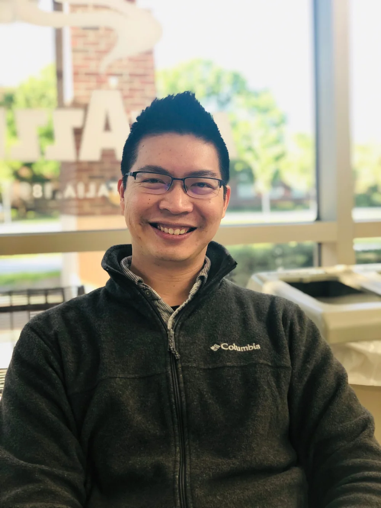
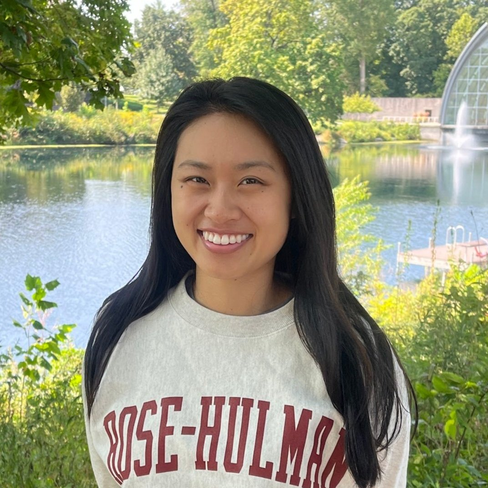
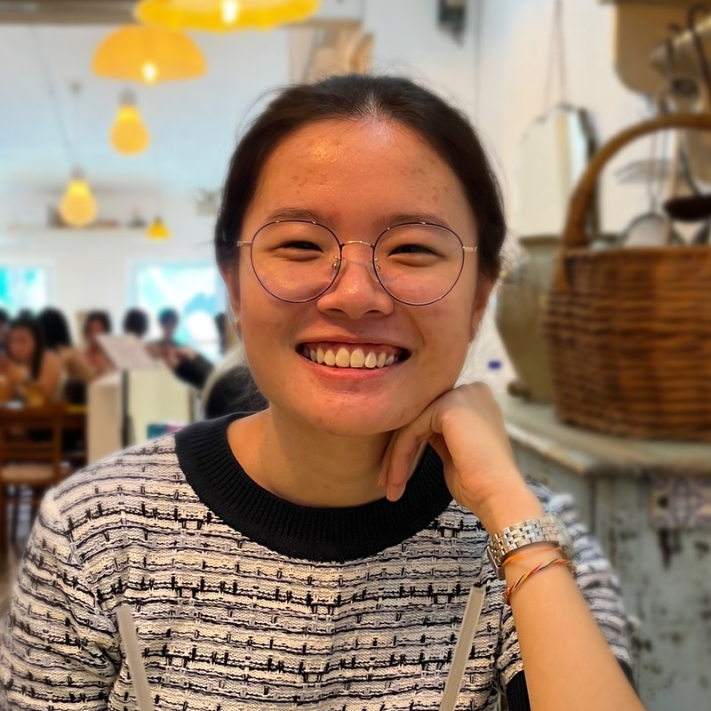
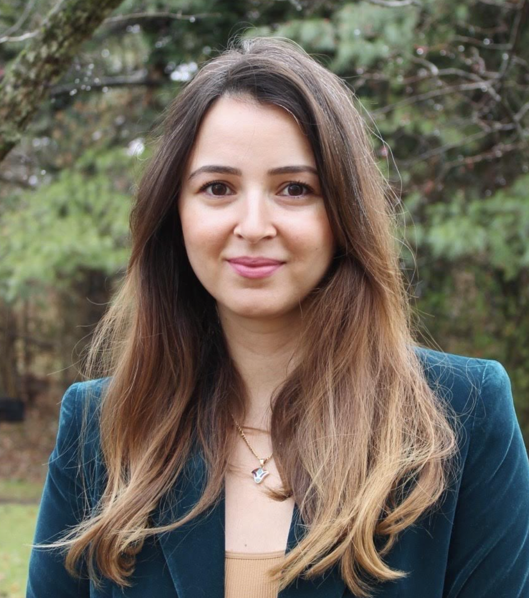
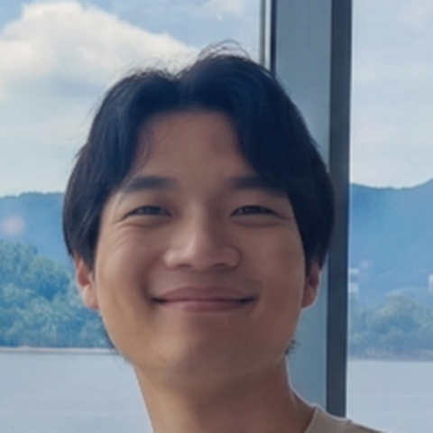
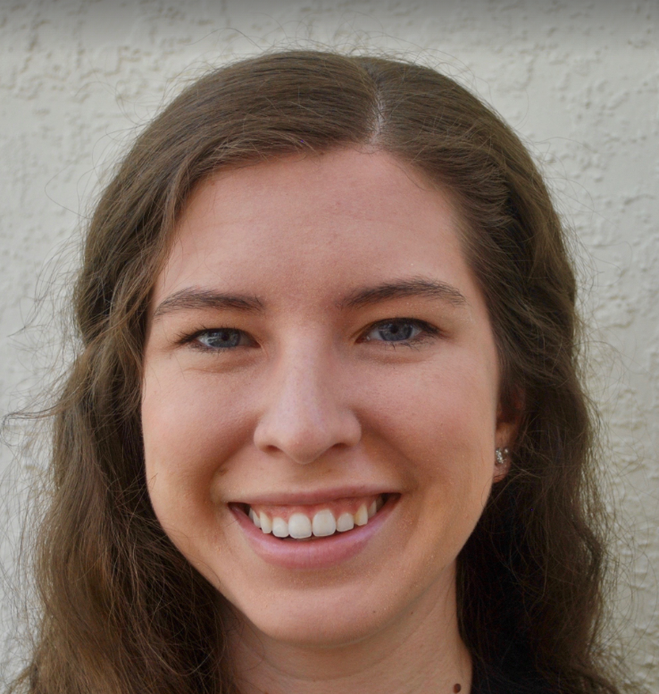

People
Our Team

Louis Tay
CV | ResearchGate | Google Scholar | Purdue Faculty Page | LinkedIn | Personal Site
Louis Tay is William C. Byham Professor of Industrial-Organizational Psychology at Purdue University. His substantive research interests include well-being (subjective well-being, psychological well-being), character strengths, and vocational interests. His methodological research interests include measurement, item response theory, latent class modeling, multilevel analysis, and data science. He is a co-editor of the books Big Data in Psychological Research (APA Books), Handbook of Well-Being (DEF Publishers), Handbook of Positive Psychology Assessment (Hogrefe), Oxford Handbook of the Positive Humanities (Oxford), Technology and Measurement around the Globe (Cambridge), and The Oxford Handbook of Well-Being in Higher Education (Oxford). His research has appeared in journals such as American Psychologist, Nature Human Behavior, Psychological Bulletin, Perspectives on Psychological Science, Journal of Personality and Social Psychology, Psychological Science, Journal of Applied Psychology, Personnel Psychology, and Organizational Research Methods. His research has also appeared in various media outlets such as The Wall Street Journal, APA Monitor on Psychology, Scientific American Mind, Psychology Today, and MSNBC. He was awarded the 2015 Rising Star award from the Association of Psychological Science, the 2016 Sage Publications/RMD/CARMA Early Career Award, the 2016 Ruut Veenhoven Award for Happiness Research, and the 2019 Society for Personality and Social Psychology (SPSP) Sage Young Scholars Award. He has contributed to the United Nations’ research reports on well-being and serves in consulting roles for top tech companies and Fortune 500 organizations. Consultations have involved topics such as better understanding customer and employee well-being, improving recruitment and selection processes, and understanding biases in measurement, machine learning, and AI. He is the co-founder, with Justin Rahimi, of the tech startup ExpiWell, which advances the science and capture of daily life experiences through experience sampling methodology, and which now serves more than 7,000 researchers across 1,000+ institutions in over 20 countries.

Gloria Liou
Graduate Student
Gloria Liou is a Ph.D. student in Industrial-Organizational Psychology at Purdue. She was previously a Visiting Assistant Professor of Computer Science at Rose-Hulman Institute of Technology and a Product Manager at Google. Her research interests include authenticity, well-being, machine learning, and big data.
Fanyi Zhang
Graduate Student
Fanyi Zhang is a Ph.D. student in Industrial and Organizational Psychology at Purdue University. She graduated from Colgate University in 2019 with a B.A. in Psychological Sciences and French, and recently earned her M.S. in Industrial and Organizational Psychology at Purdue in 2024. Fanyi’s research focuses on positive relationships at work (e.g., mentorship, leadership), employee well-being and research methods. When not busy with studies, Fanyi enjoys singing (off-key but enthusiastically), swimming (somewhere between a dog paddle and a freestyle fiasco), and flying (in very rare occasions when her budget allows).

Joyce K. W. Lum
Graduate Student
Joyce is a Ph.D. student in I-O Psychology at Purdue University. She graduated from the National University of Singapore with a master’s in psychology and spent a year working as a research assistant/associate in the National Institute of Education, Singapore. Joyce’s research interest lies in well-being, emotion, measurement, and data analysis. Beyond research, she enjoys books (mostly non-fiction), good coffee (drip coffee!), music (classical music!), and going to Pilates classes (for the sake of her physical well-being).

Amal Chekili
Postdoctoral Research Associate
Amal Chekili is a Postdoctoral Research Associate in the WAM Lab at Purdue University. She earned her doctorate in Industrial-Organizational Psychology from Virginia Tech, where she also completed a master’s degree in Data Analysis and Statistics. Her research is centered on studying the benefits, challenges, and opportunities of artificial intelligence (AI) in organizational settings. Leveraging conversational large language models and other natural-language-processing techniques, Amal tackles organizational problems while keeping a strong focus on diversity, equity, and inclusion. Through her work, she highlights AI’s transformative potential and the considerations needed to foster more inclusive workplaces.

Jinsoo Choi
Postdoctoral Research Associate
Jinsoo Choi is a Postdoctoral Research Associate in the WAM Lab at Purdue University. He earned his Ph.D. in Industrial-Organizational Psychology from the University of Illinois Urbana-Champaign, with a minor in Quantitative Psychology. His research spans personnel selection, well-being, and advanced research methods—developing and validating fake-resistant assessments, applying multi-objective optimization to the validity–fairness dilemma, and integrating AI conversational agents to promote long-term human flourishing through character virtues. He also develops structural equation modeling techniques for examining hierarchical psychological constructs.

Lauren Moran
Postdoctoral Research Associate
Lauren Moran is a Postdoctoral Research Associate in the WAM Lab at Purdue University. She received her Ph.D. in Industrial-Organizational (I-O) Psychology at the Georgia Institute of Technology. She also holds an M.S. in I-O Psychology from Georgia Institute of Technology and a B.S. in Psychology from Florida State University. Her research has centered on worker health and well-being, spanning topics such as recovery from work, employee benefits, and commuting experiences. Over the last few years, she has increasingly examined the ways in which artificial intelligence affects worker experiences, including studying the integration of AI teammates into mental healthcare, and the use of AI for job crafting. Her work with Florea AI focuses on how AI can be used to facilitate individual flourishing, from friendship maintenance to supporting positive psychological interventions.
Rediet Shiferahu
Post-Bac Researcher
Rediet Shiferahu is a post-bac researcher in the WAM Lab at Purdue University. She earned her B.A. in psychology from Colgate University with minors in Global Public and Environmental Health and Women’s Studies. Her research explores how relationships, sleep, and storytelling shape well-being and healing, as well as how people’s connections with food reflect emotion, identity, and resilience. Outside the lab, she enjoys hiking, cooking, and traveling.
Hillary Merzdorf
Research Operations Administrator
Hillary Merzdorf is a Research Operations Administrator in the Department of Psychological Sciences at Purdue University. She earned a Ph.D. in Engineering Education from Purdue University in 2022, where she also earned degrees in Psychology, Educational Psychology, and Industrial Engineering. She has experience in instructional design, assessment development and validation, and user-centered educational technology. She is interested in the role of computers and intelligent systems to support cognition and learning, and she enjoys mentoring student researchers.
Graduate Students and Post-Docs
- Victoria S. Scotney — Independent Scholar
- Daphne (Xin) Hou — Assistant Professor of Industrial-Organizational Psychology at University of South Florida
- Stuti Thapa — Assistant Professor of Industrial-Organizational Psychology at Tulsa University
- Louis Hickman — Assistant Professor of Industrial-Organizational Psychology at Virginia Tech
- Cassondra Batz-Barbarich — Associate Professor of Business at Lake Forest University
- Vincent Ng — Assistant Professor of Industrial-Organizational Psychology at Kozminski University
- Hoda Vaziri — Associate Professor of Management at the University of North Texas
- Chris Wiese — Associate Professor of Industrial-Organizational Psychology at Georgia Tech
- Lauren Kuykendall — Associate Professor of Industrial-Organizational Psychology at George Mason University
Post-Bac Researchers
- Annika (Ziqi) Wei — Research Associate at Harvard Business School
- Molly Cooper — Counseling Psychology PhD student at Fordham University
- Audrey Palmeri — Industrial-Organizational Psychology PhD student at Pennsylvania State University
- Cavan Bonner — Personality Psychology PhD student at University of Illinois Urbana-Champaign (NSF GRFP Awardee)
- Gloria Liou — Industrial-Organizational Psychology PhD student at Purdue University (NSF GRFP Awardee)
- Fanyi Zhang (張凡一) — Industrial-Organizational Psychology PhD student at Purdue University
Past Visiting Scholars
- Jessica de Bloom — Visiting Scholar, University of Groningen
- Olesia Bubnovskaia — Fulbright Visiting Scholar, Head of Safety and Risk Lab, Far Eastern Federal University
- Grace Yao — Visiting Scholar, Professor, National Taiwan University
Join the Lab
Interested in working with us?
We welcome motivated undergraduates and prospective graduate students interested in well-being, measurement, data science, and AI. Undergraduates can earn research experience (PSY 390 / PSY 498); graduate students are mentored toward independent research careers.
Recruiting a graduate student for Fall 2027. I am recruiting one doctoral student through the Purdue Industrial-Organizational Psychology program. The student will study AI conversational agents and their role in fostering character virtues and human flourishing — interdisciplinary work supported by major grants at the intersection of well-being, measurement, and AI.
Ideal applicants will have strong research experience and interests in AI, research methods, well-being, and character virtues.
The best way to get started is simply to reach out. Email me with a brief note about your interests and I’ll be glad to tell you more.